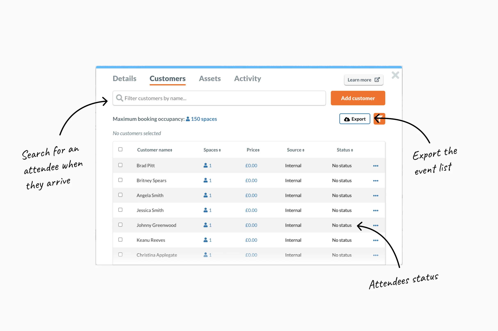
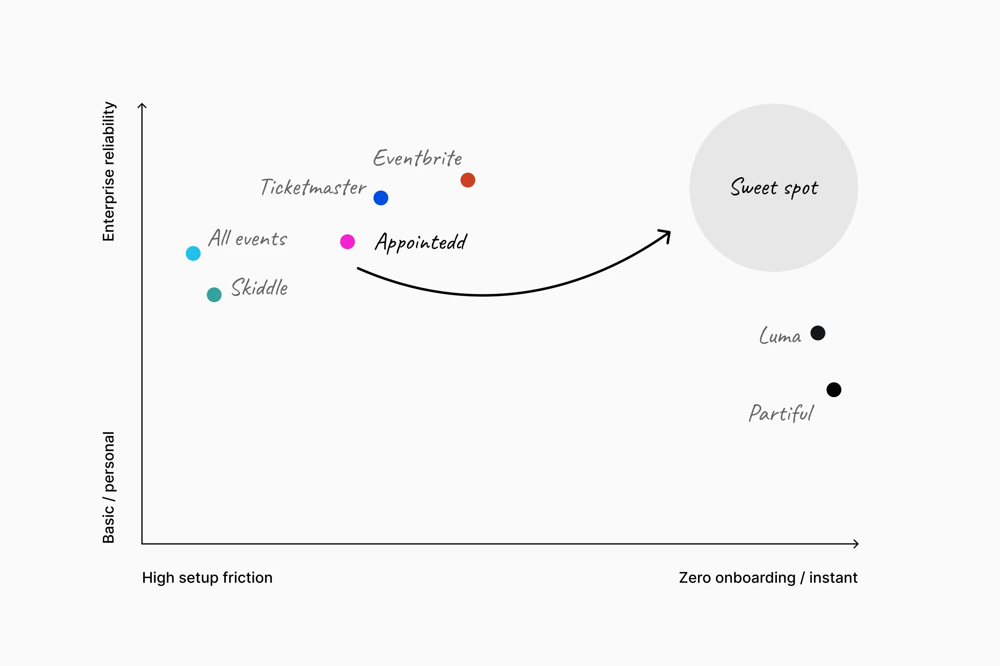
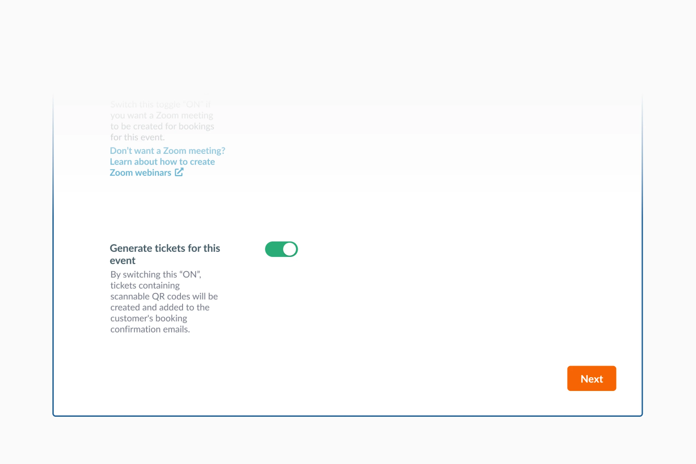
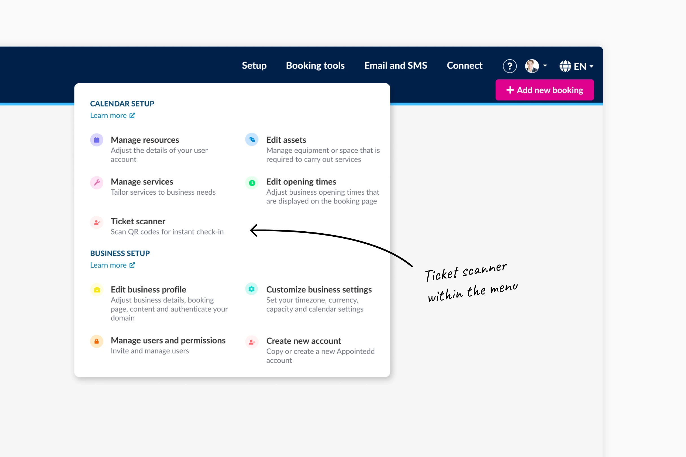
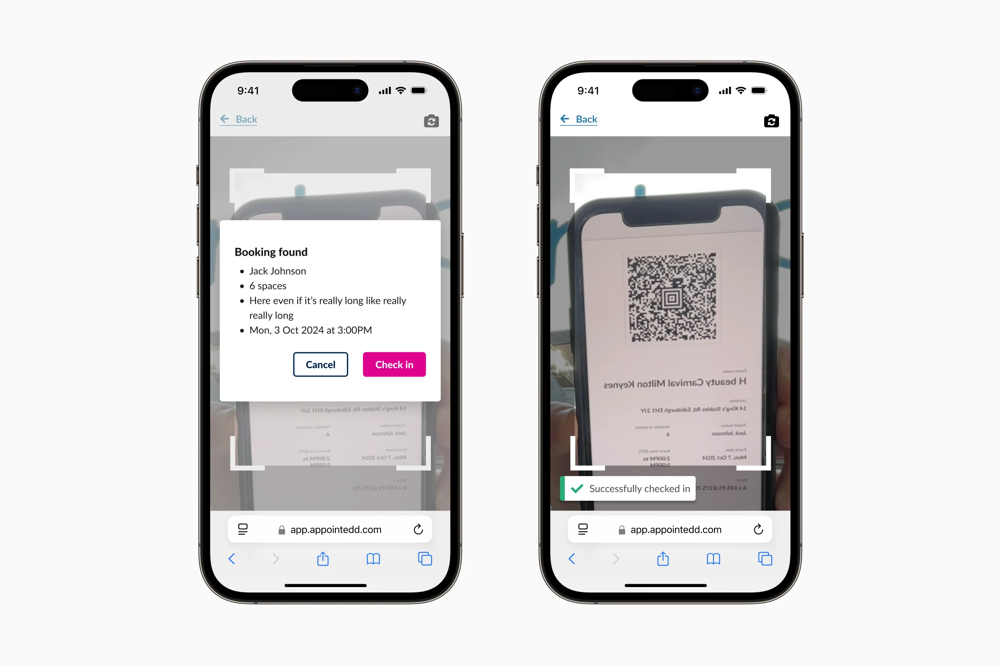
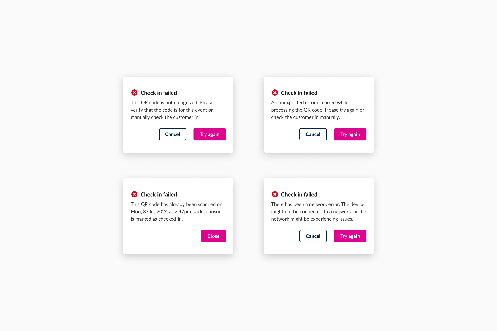
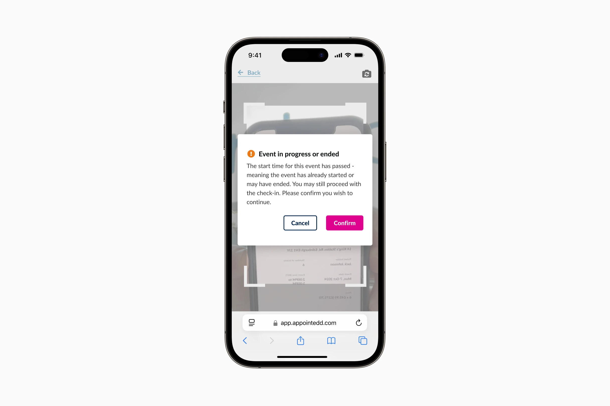
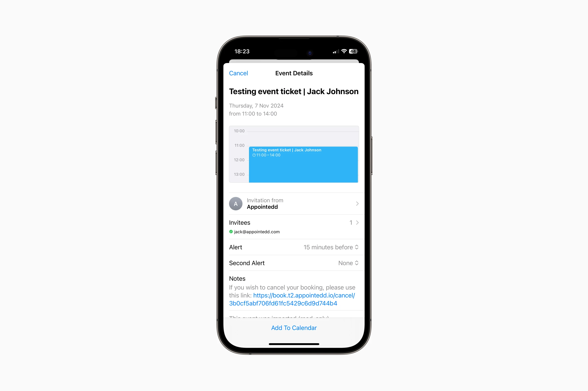
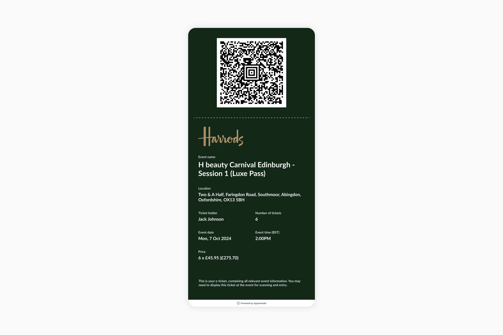

Don't have time to read it all?
I led the design lifecycle, from initial discovery to implementation for Appointedd’s new ticket generation and attendee check-in features. With unique QR-coded tickets, attendees can be quickly verified and checked in, helping to reduce wait times and keep event entry smooth and efficient.
- We became a much bigger competitor and viable option to Eventbrite.
- 37% of identified clients had adopted the functionality within the first month.1
- Enterprise clients including Harrods, Liberty London and Victoria’s Secret had expressed eagerness of using the new features for all upcoming events.
The team
- Lead design: Me
- Project Manager: Ruta Vareikaite
- Lead Developer: Corey Magdziarz
- Developers: Jane Tatham & Emma Gray
Context & objective
Appointedd is an enterprise online booking and scheduling platform. In late 2023 Eventbrite removed the ability to host events for free, which created a market gap. We wanted to capitalize on this shift by improving Appointedd’s core event functionality to capture enterprise clients looking to move.
The problem
For clients hosting events through Appointedd, checking in attendees relied on a couple of different methods:
Manual platform searches: To successfully log an attendee on Appointedd, organisers had to manually search the system for their name and change their status to 'arrived'. During busy events, they frequently skipped this step and just checked confirmation emails at the door, artificially inflating "no show" metrics and rendering the event data completely unreliable.

Printed sheets: Exported lists from Appointedd were printed and kept at the door. This was inefficient and, more importantly, a poor brand experience for clients like Harrods or Liberty London.
Project kick off
I led the project kick-off with the core project team, C-Suite, and Customer Success Managers (CSMs). CSMs often set up events on behalf of enterprise clients, their product knowledge was invaluable for helping us define initial requirements.
Aligning a new team
We started the project as a newly formed and fully remote team. This led to communication not being where it needed to be. It was my first project at Appointedd, and the lead developer’s first time leading on the dev side. To fix this, I facilitated a mini ways of working workshop to help set some expectations early on. We established a regular meeting cadence. These meetings included ticket refinements, open design feedback and daily check-ins.
Technical contrainsts & legacy code
Appointedd is built on quite a complex foundation of legacy code, which meant hooking in new scanning logic wasn't going to be straightforward. Whilst developers confirmed the technical feasibility of the designs, a huge worry was the possibility of hitting hurdles during the build. Given the communication loops established in the workshop, we were prepared for any rapid changes required without stalling the project entirely.
Analysing the competitors
I analysed the leading competitors in the sector including Eventbrite, AllEvents, Ticketmaster, Luma and many more. Enterprise clients needed data reliability and platform robustness, but delivered with the effortless simplicity of newer tools like Luma. That became our design north star for everything that followed.

Speaking to the experts
We began speaking with clients who currently host events through Appointedd. I then held moderated user interviews with companies across retail, luxury, and finance including AND Agency, Society Matters, Holyrood Communications and White and Mackay to map their workflows and frustrations.
User interviews confirmed that zero onboarding was a non negotiable. While I initially assumed scanning would happen via a laptop and webcam, interviews revealed staff needed the flexibility to scan on any device, including tablets and personal phones. This insight made a browser based scanner the only viable solution. It ensured that anyone could be ready to scan in seconds using hardware already available, without the friction of a download or a complex setup.
Researching ticket designs
I’ve always found that tickets designed for printing are a disaster on mobile. You’re usually required to awkwardly zoom in on a PDF ticket just to get the QR code big enough for the scanner.

I looked beyond the event space to rail and air travel for inspiration, borrowing established design patterns to ensure tickets felt familiar. To test legibility, I ran rapid mobile tests by emailing PDF prototypes to various devices, identifying any display issues before they moved to production.

Fitting into the existing journey
=======Fitting in with the current journey
>>>>>>> Stashed changesThe new ticketing functionalty slotted directly into the existing event creation journey. This approach meant we could ship the feature and get it into users hands immediately while the larger event management overhaul was still being built in the background.


Introducing digital ticket and scanning
Clients could now issue automatic tickets directly via Appointedd. With unique QR-coded tickets, attendees can be quickly verified and checked in, helping to reduce wait times and keep entry smooth and efficient.


When clients enable this feature for events, each attendee will automatically receive a PDF ticket containing a unique QR code attached to their confirmation email.

On the event day, clients can use the built in scanner in the Appointedd web app to scan each QR code and automatically check in attendees, marking them as "Arrived" in real time.

Building a resilient tool for eventualities
In a perfect world, every attendee would arrive on time with a valid ticket. In reality event staff deal with network issues, duplicate ticket scans, and guests arriving long after the event has started. We had to ensure this tool could handle all of those eventualities.
Instead of creating generic error states, I focused on providing actionable feedback so staff could resolve issues quickly.

The scanner would also highlight when an attendee is late. This gave the event runner the final say on whether to refuse entry or let them in, making sure they actually understood the situation before hitting confirm.

Timecode anxiety and local time
I maintained the platform's standard Europe/London (GMT) formatting for the digital tickets. This kept the ticket information consistent with confirmation emails.
Those emails also feature an "Add To Calendar" integration which adds the event to your device calendar and handles the automatic local time conversion. This approach provided a static source of truth on the ticket without losing the convenience of local scheduling for attendees.

Strategic roadmap and scoping
Speed was of the utmost importance to capitalize on the Eventbrite market shift. By inserting this new functionality directly into the current event creation journey, we achieved a much shorter release timeline.
To ensure we were stayed on track for the launch date, I consciously deferred features like custom ticket design and digital wallet integration to Phase 2, trading 'nice to have' features for project quickness.

Afterword
This project was just one part of a bigger overhaul for events on the Appointedd platform. I was unfortunately made redundant before we could get Phase 2 out the door, but I’m glad I oversaw the first release of the ticketing and scanning tools. Functionality that is still live and helping customers today.